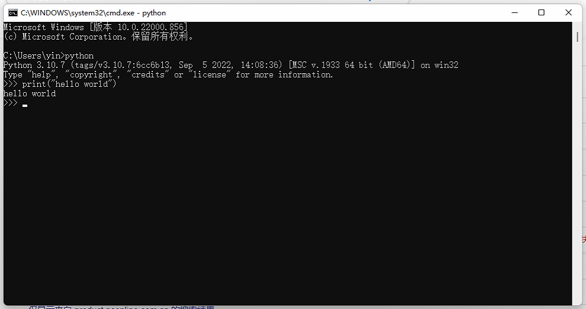
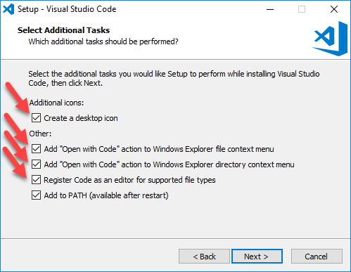
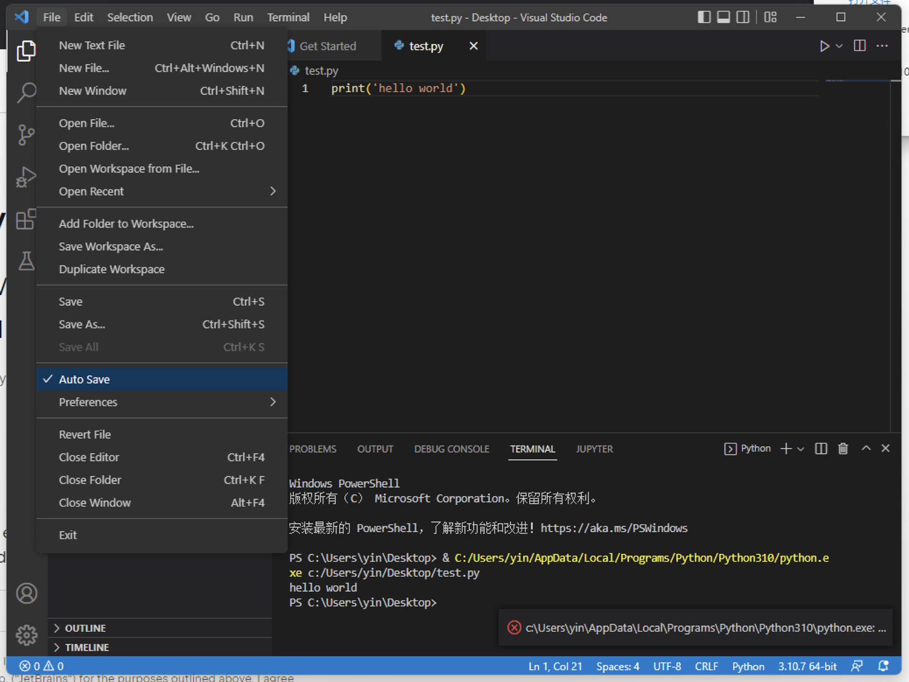
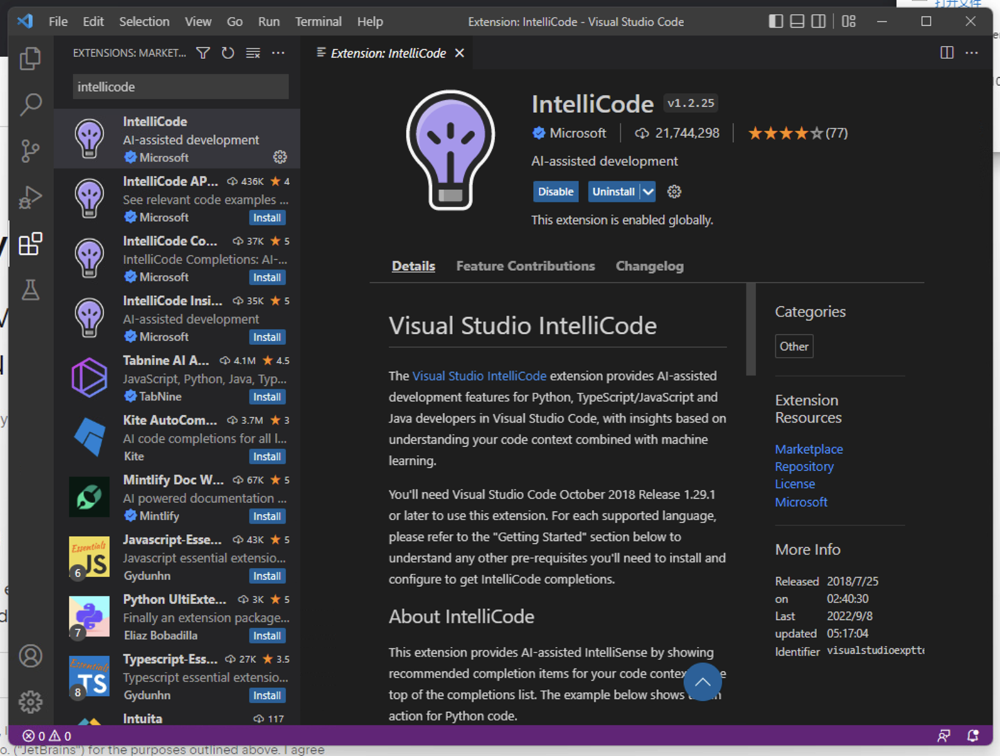
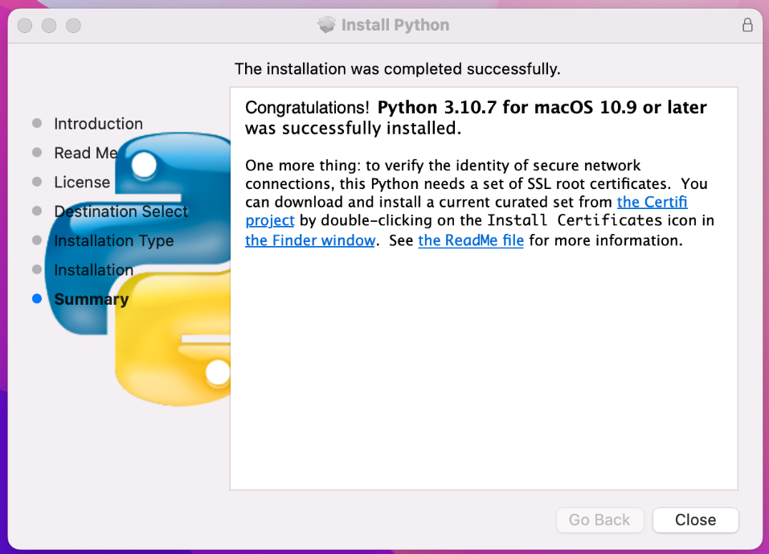
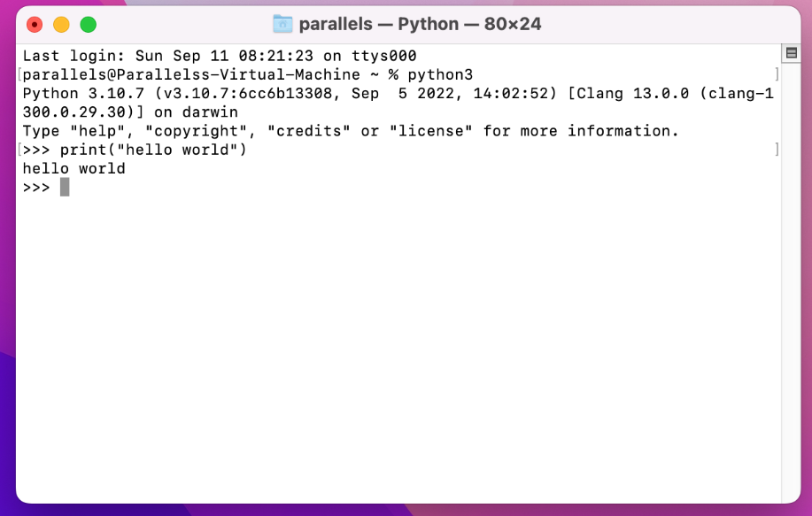
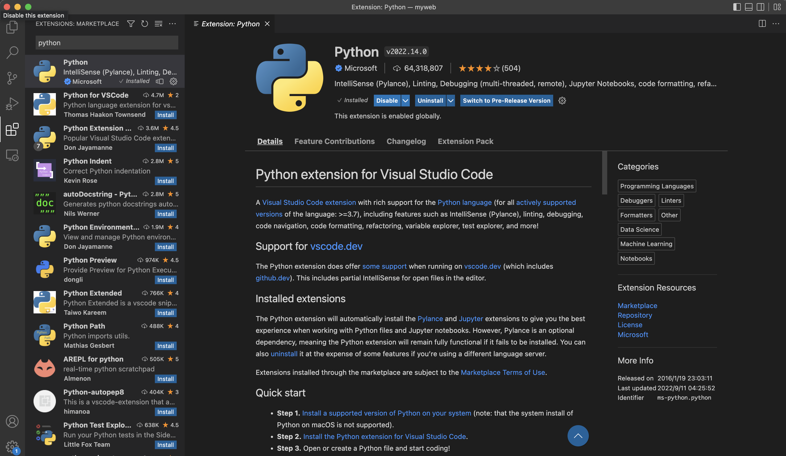
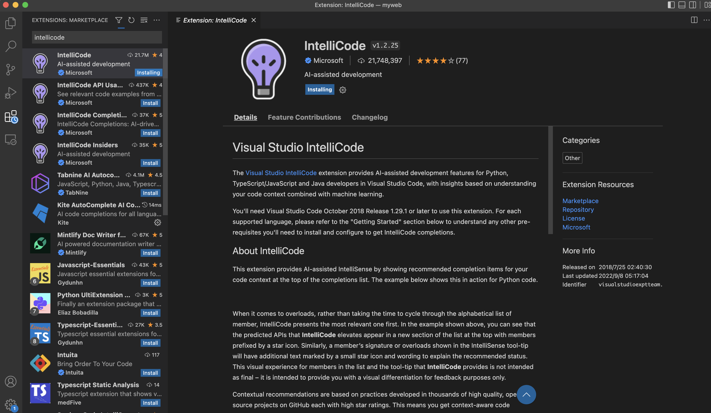
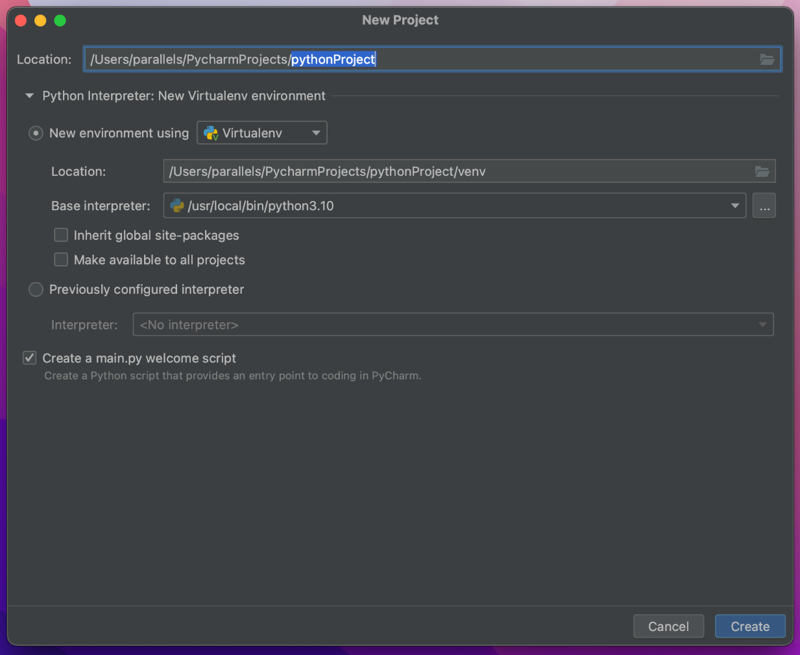
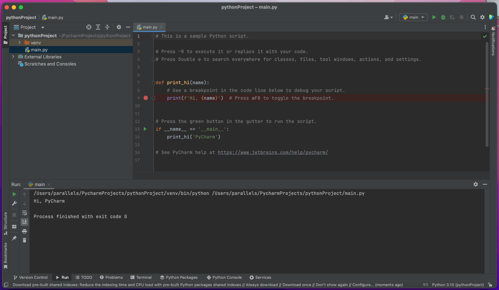

CSC1001: Tutorial for Installing Python and IDE
Author: Juntao Wang Date: 2022/9/11
CSC1001: Tutorial for Installing Python and IDERecommended Configuration1. VS Code + Python2. PyCharm + Python (mainly used in my tutorial)3. Anaconda + Python (install by yourself if you REALLY need it)Installation1. Windows1.1 Install Python1.2 VS Code/PyCharm1.2.1 VS Code1.2.2 PyCharm2. Mac2.1 Install Python2.2 VS Code/PyCharm2.2.1 VS Code2.2.2 PyCharm3. Linux
Recommended Configuration
1. VS Code + Python
VS Code: more lightweight and extensible, open resource, available for many programming languages; but not that convenient for debugging, the editing experience is worse than Pycharm.
- More recommended for computers with RAM = 8G or even less, also recommended for computers with RAM > 8G
- Recommended for those with future needs for other programming languages (Java, PHP, ...)
- Recommended if you are interested
2. PyCharm + Python (mainly used in my tutorial)
PyCharm: mature, specific, and well-configured for Python; but bloated and RAM-consuming.
- Recommended for computers with RAM > 8G
- Recommended for those with future needs for advanced python programming (machine learning, large-scale scripts, ...)
- Recommended if you are interested
3. Anaconda + Python (install by yourself if you REALLY need it)
Anaconda: virtual environment management, recommended for those with many projects on hand but need different modules for each project.
- Recommended for computers with RAM > 8G
- Recommended for those with future needs for data science programming (modules like Pandas, NumPy, Matplotlib, Jupyter, and Scipy are built-in), and needs for virtual environment management (conda)
- Recommended if you are interested
Installation
- The Principle of Learning to Code
If you got problems, you should always ask the master Google first. If the problems are still not solved, then you can come to ask me and I will ask Google together with you🤪.
1. Windows
1.1 Install Python
- Step 0: Check if your Windows is 32-bit or 64-bit (how to check)
- Step 1: Download in Python Releases for Windows | Python.org

Step 2: Add Python to PATH

Step 3: Test
- Press win+r;
- Input "cmd", enter;
- Input "python", enter; test the command
print("hello world") - If you see this output, then you have successfully installed Python. Congrats!
- 
1.2 VS Code/PyCharm
1.2.1 VS Code
Step 1: Download it at https://code.visualstudio.com/;
- Suggest you install VS Code in your non-system disk (D, E, ...)
- Attention to the below selections.

Step 2: Install the Python extension (so that your VS Code can debug)

Step 3: Open Auto Save (very important!!!)

Step 4: Install the code completion plugin Visual Studio IntelliCode (not necessary but recommended)

1.2.2 PyCharm
Step 1: Download the Community version at https://www.jetbrains.com/pycharm/download/#section=windows
- Suggest you install VS Code in your non-system disk (D, E, ...)
- Attention to the below selections.

Step 2: Test


2. Mac
2.1 Install Python
Step 1: Download in Python Releases for macOS | Python.org

Step 2: Install by the installer
- 
Step 3: Test
- Open Terminal

- Input "python3", enter; test the command
print("hello world") - If you see this output, then you have successfully installed Python. Congrats!
- 
2.2 VS Code/PyCharm
2.2.1 VS Code
Step 1: Download it at https://code.visualstudio.com/; and intall by installer

Step 2: Install the Python extension (so that your VS Code can debug)

Step 3: Open Auto Save (very important!!!)

Step 4: Install the code completion plugin Visual Studio IntelliCode (not necessary but recommended)

2.2.2 PyCharm
Step 1: Download the Community version (check your silicon type! Intel or Apple) at https://www.jetbrains.com/pycharm/download/#section=mac
Step 2: Test (same to Step 2 in 1.2.2)



3. Linux
I believe you have the ability to install whatever IDE you want by yourself if you are using Linux. 😉